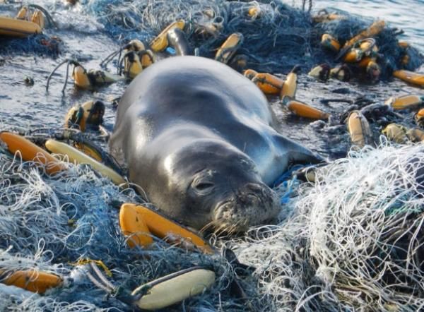
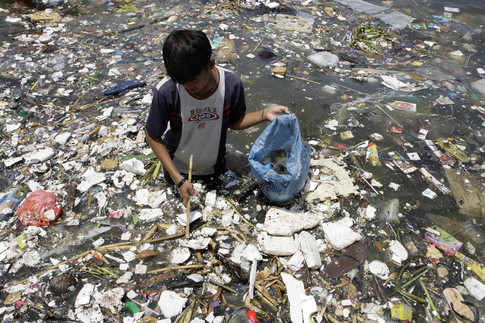
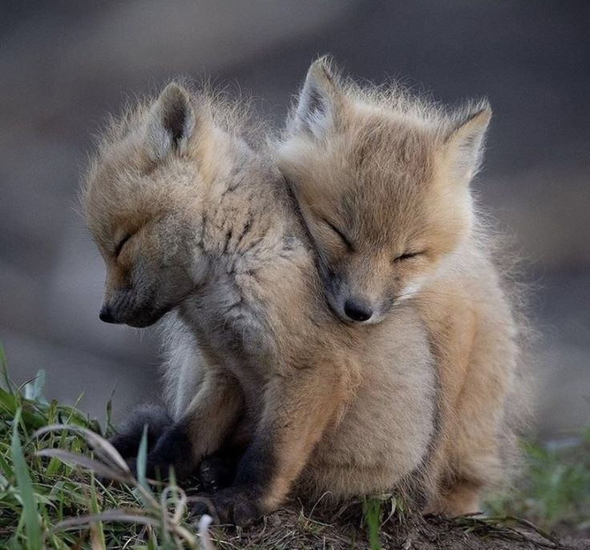
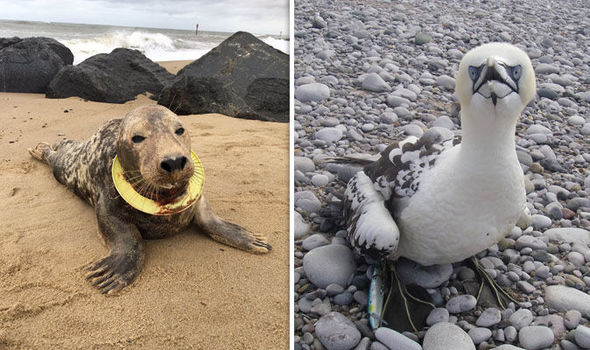
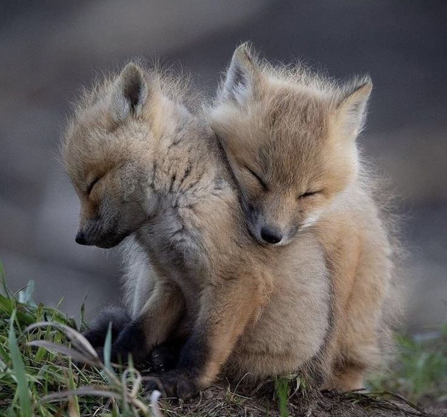
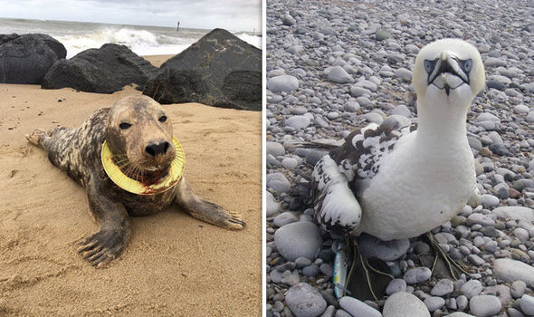
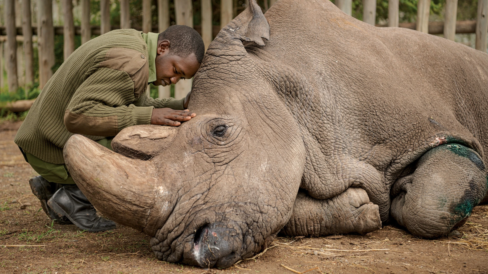
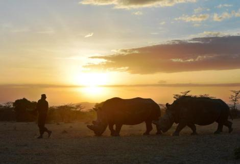
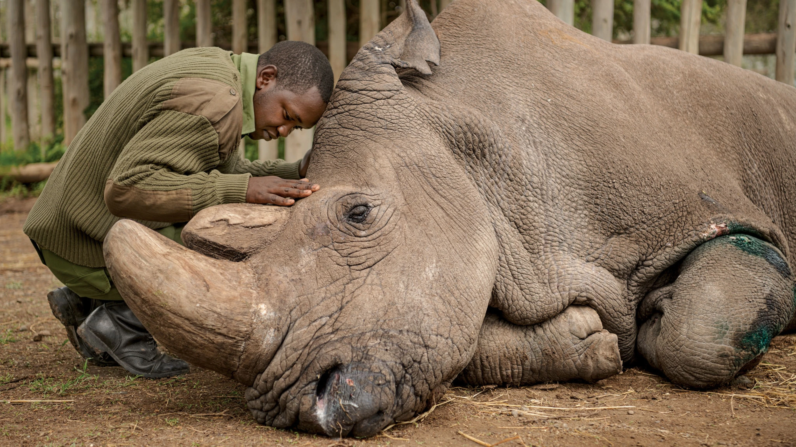
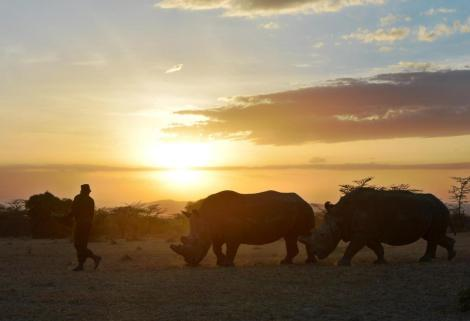

Effects On Nature
  



Environment affects animal behavior by changing the availability of survival resources like food & shelter, as well as situational things like proximity to human activity. Sometimes the same species of animal will behave completely differently in a forest environment compared to an urban environment. Humans impact the physical environment in many ways: overpopulation, pollution, burning fossil fuels, and deforestation. Changes like these have triggered climate change, soil erosion, poor air quality, and undrinkable water.Animals, or wildlife, are vulnerable to harm from air pollution. Pollutant issues of concern include acid rain, heavy metals, persistent organic pollutants (POPs) and other toxic substances. Insects, worms, clams, fish, birds and mammals, all interact with their environment in different ways. Environment affects animal behavior by changing the availability of survival resources like food & shelter, as well as situational things like proximity to human activity. Sometimes the same species of animal will behave completely differently in a forest environment compared to an urban environment. Ways in which people positively affect ecosystems around the world include: Recycling. Establishing wildlife preserves and parks. Creating green, open space laws.Donate, recycle, and repair electronic devices (see how here). Use less water when brushing teeth, taking a shower, or washing the dishes. Use less electricity by turning off lights and electronic devices when not in use, using energy-saving light bulbs, and hanging clothes to dry.There are many ways to save our planet including conserving water, reducing our use of oil and embracing green energy, reducing waste and single-use plastics and planting more trees. If you're looking for small ways that you can make a difference, search online for ideas of how to get started.
Land Animals
Rhinos
 



Temperatures lower many species survival rates due to changes that lead to less food, less successful reproduction, and interfering with the environment for native wildlife Next to poaching, loss of habitat contributes to declines in rhino population. Human activities such as agriculture, settlements, and infrastructure development result in the loss and fragmentation of rhino habitat, which increases the risk of poaching and inbreeding. Rhinos will be especially affected by global warming. The change in temperature and climate has changed its food plant's cycle and its habitat. During the long dry season, the rhinoceros likes to wallow in mud holes; this is now becoming difficult because there often is not enough water to make a mud hole.Poaching. Poaching, driven by consumer demand for rhino horn primarily in Asia, poses the biggest threat to rhinos.While rhinos don't have the best eyesight, they make up for the weakness by possessing an extraordinary sense of smell.The most common reason for rhino poaching is to meet the high demand for their horns in Asian countries, where the horn is predominantly used in Traditional Chinese Medicine but is increasingly being used as a symbol of wealth and prosperitie.
Ocean Animals
Turtles


All species of sea turtle are classified as Endangered. Slaughtered for their eggs, meat, skin, and shells, sea turtles suffer from poaching and over-exploitation. They also face habitat destruction and accidental capture in fishing gear. Climate change has an impact on turtle nesting sites. Human influences and reliance on these species, as well as changing environmental conditions, will determine the future health of these marine inhabitants. Toxic spills, oxygen-depleted dead zones, marine debris, increasing ocean temperatures, overfishing, and shoreline development are daily threats to marine life. Over the last 200 years, human activities have tipped the scales against the survival of these ancient mariners. Slaughtered for their eggs, meat, skin, and shells, sea turtles suffer from poaching and over-exploitation. They also face habitat destruction and accidental capture—known as bycatch—in fishing gear. Now, climate change is exposing sea turtles to even greater existential threats. Sea level rise and stronger storms will erode and destroy their beach habitats. Warming oceans will change ocean currents, potentially introducing sea turtles to new predators and harming the coral reefs some of them need to survive. These threats include coastal development, pollution, direct harvest, invasive species and vessel strikes. With the encroachment of hotels, parking lots and housing along nesting beaches, female turtles are forced to use suboptimal nesting habitats.The biggest threat to turtles and tortoises globally. Other threats include the pet trade, overconsumption for food and medicine, pollution, invasive species, and climate change.Nearly all species of sea turtle are classified as Endangered. Slaughtered for their eggs, meat, skin, and shells, sea turtles suffer from poaching and over-exploitation. They also face habitat destruction and accidental capture in fishing gear. Climate change has an impact on turtle nesting sites.Nearly all species of sea turtle are classified as Endangered. Slaughtered for their eggs, meat, skin, and shells, sea turtles suffer from poaching and over-exploitation. They also face habitat destruction and accidental capture in fishing gear. Climate change has an impact on turtle nesting sites.
How Is Climate Change Affecting Animals
- Evolution would have to occur 10,000 times faster than it typically does in order for most species to adapt and avoid extinction.
- Other species may not be able to migrate due to geographical obstructions or man-made barriers such as cities or highways.
- The United Nations estimates that healthy ecosystems could account for 37% of the carbon reductions needed to limit global temperature rise.
- 14 species of small mammals extended their range 1,640 feet higher in the Sierra Nevada region.
- Climate change is doing "widespread and consequential" harm to animals and plants, which are struggling to adapt to new conditions,
.jpg)